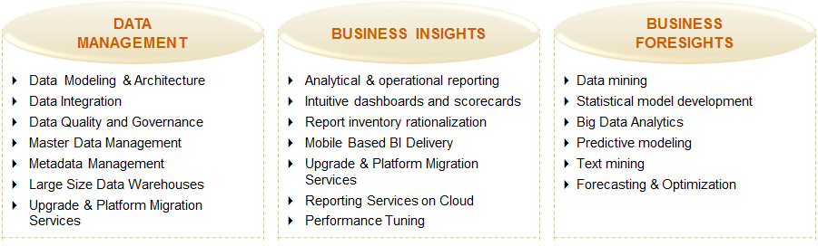

Businesses today are generating humongous amount of data which has critical insights embedded in them. Though these businesses have the ability to store this data, they lack the ability to process it. Big data or data gathered from non-traditional sources such as social media, blogs, sensors, pictures, videos, etc. promises deeper insight into their business, customers, and partners. Big data being unstructured and voluminous cannot be effectively managed using traditional data management tools and techniques. Interpreting big data requires efficient business intelligence and analytics solutions.
Syntel offers competitive business intelligence and analytics solutions that derive actionable insights from trillions of bytes of structured and unstructured data. We enable our clients to manage data by building big data foundation layer, data lake, and machine learning platform. This enhances their decision making capabilities and creates new market opportunities.
Syntel’s key strength is in providing dedicated services in the business intelligence and analytics space by building and leveraging business intelligence (BI) including enterprise data warehouses and big data. This consists of end-to-end solutions across the technology domains to build solutions such as data lake, augmented data warehouses, data management platform, business insight, and business foresight, leveraging machine learning and predictive analytics techniques.

Data and Insights Services